In Section 3.2 we noticed that the high and low points of the graph of a function often coincided with a point where the derivative of the function was 0. In a business setting, we are often concerned with finding the maximum and minimum values of a function, because one or the other will be a best, or optimum value. We typically want to maximize functions like profit, utility, revenue, and market share. We typically want to minimize functions like cost and liability. We will use the same basic process to optimize, whether the extremum we are finding is a maximum and minimum.
Recall, we said that the derivative can be thought of as the slope of the apparent line, obtained by zooming in on the graph of a function. Clearly, we cannot have an extremum at an interior point of the domain if the derivative is nonzero, because we could go either higher or lower by moving a little to the right or left. Thus we can only have extrema at a critical point, a place when the derivative is zero or undefined, or at an endpoint where we cannot go both left and right. This gives us a small list of candidate points for the optimum value.
Our process for optimization will be to find all the candidate points, then to see which gives the highest and lowest values. When our curve has a point that is a maximum or minimum in some interval around the point, we call it a relative maximum or minimum. If it is the highest or lowest point for the whole domain of the function it is called a global maximum or minimum.
Example3.4.1.Profit function for widgets.
Figure3.4.2.Video presentation of this example
We have determined that the profit function for selling widgets is
with the function valid on the interval \(0\le \quantity\le 500\text{.}\) Find the minimum and maximum profit in the given interval.
Solution1.Solution A: without calculus
The first example was chosen because it can be done without using any calculus, so we solve it with easier methods first. The profit function is a quadratic function in quantity, so it is a downward pointing parabola. The location of the vertex is at \(\quantity=200\text{,}\) which we obtain from the coefficients of the quadratic and linear terms. Thus we need to check this point and the two endpoints. Plugging in values, we get \((0,-5000)\text{,}\)\((200, 35000)\) and \((500, -55000)\text{.}\) The maximum occurs when we sell 200 widgets and our profit is $35,000, the minimum occurs when we sell 500 widgets and our loss is $55,000. A relative minimum occurs when we sell 0 widgets and our loss is $5,000.
Solution2.Solution B: with calculus
We want to set up the problem to be able to graph the profit function and its derivative on the same graph. We will us the calculator approximation of the derivative. As we did in the last section, we set up a worksheet with columns for \(q\text{,}\)\(q+.001\text{,}\)\(q-0.001\text{,}\)\(p(q)\text{,}\)\(p(q+.001)\text{,}\)\(p(q-0.001)\text{,}\) and \(p'(q)\text{.}\) This allows most of the worksheet to be filled in with quick fill.
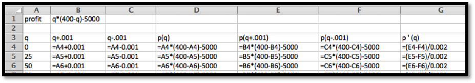
We then look at the values, and compare the table to a graph. We find the same three candidate points and the same maximum and minimum values.
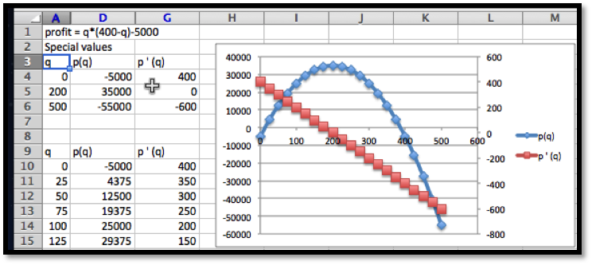
For a second example we want to look at a function where we can’t find the maximum by algebraic means.
Example3.4.3.Cumquat oil.
Figure3.4.4.Video presentation of this example
We have determined that the profit function for selling cumquat oil is
We understand that the function is valid on the interval \(0\le \quantity\le 400\text{,}\) where the quantity is measured in thousands of pints and profit is measured in thousands of dollars. Find the minimum and maximum profit in the given interval.
Solution.
The spreadsheet is set up like it was in the first example, but with the function changed.
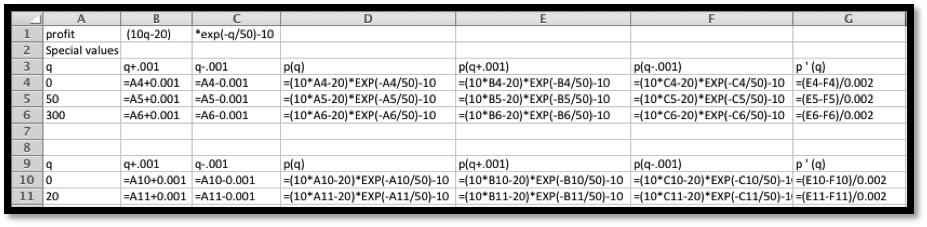
Looking at the graph and the chart we expect to find local minima at the endpoints, and the maximum when \(q\) is close to 50. We use goal seek to find where the derivative is zero. As we see below, Goal Seek does not find a point where the derivative is zero. Instead it finds a point where the derivative is “close enough” to zero. By default, “close enough” is understood by Excel as being within 0.001.
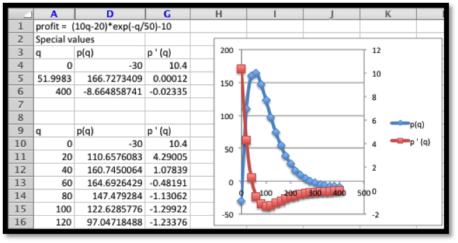
If the default definition of “close enough” is good enough for our purposes, then the maximum profit of $166,727 occurs when we sell 51,998 pints of oil. (In fact, selling 2 more pints of oil will yield an extra 0.01 cents.) The minimum profit occurs when we sell no product, in which case we have a loss of $30,000.
One of the things to notice about the last example is the robustness of the method. From an algebraic point of view, the function was rather ugly. All we needed to know to use the method was that the function was smooth enough, that when we zoomed in to a scale of \(x\) changing by 0.001 the graph looked like a straight line.
Throughout the section we have looked for places where the derivative is zero when looking for extrema. We have not paid any attention to how we decide if the point we find is a local maximum or a local minimum. There are several approaches we could use. Since we are computing the derivative we could note that a local maximum is a place where the function goes from increasing to decreasing, so the derivative goes from positive to negative. (Similarly, a local minimum is at a place where the derivative goes from positive to negative.) There is also a test that looks at the derivative of the derivative. Those tests will be more useful in the next chapter when we are finding a formula for the derivative by symbolic means. However, with the numeric technique we are using, the easiest test is that a local maximum is greater than or equal to points a little bit to both the left and right. We simply plug in points a little bit to each side to test. Since a change in \(q\) of 0.001 makes the graph look like a flat straight line, we change \(q\) by 0.01.
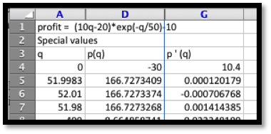
As expected, profit goes down as we move away from our expected maximum.
Example3.4.5.Gizmo profit.
Figure3.4.6.Video presentation of this example>
A plant can produce between 150 and 300 gizmos. The profit function for the plant is:
We set up the problem as before, using goal seek on the derivative to find critical points, and checking the ends of the interval.
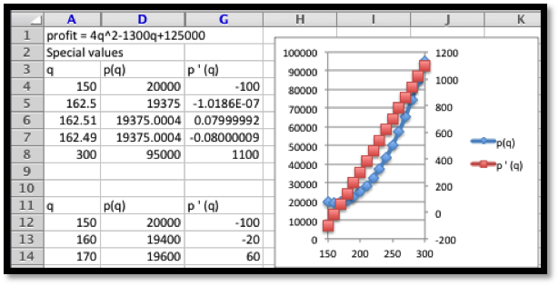
We have three candidates for the extrema, the two endpoints and the critical point at 162.5. However, by looking at the points to the side of the critical point, we see it is a local minimum. We also see, that of our 3 candidate points, the one that gives the maximum profit is the right endpoint, when quantity is 300.
For our first three examples we have been trying to find the minimum or maximum of one-variable functions. Sometimes we need to do a bit of work to get the function in that format.
Example3.4.7.Minimizing material costs.
Figure3.4.8.Video presentation of this example
I am manufacturing goop, a liquid that needs to be put in cans. We will use cans that have a standard cylindrical shape. Find the height and radius of a 1 liter can that uses a minimal amount of metal surface.
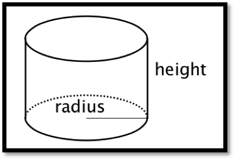
Solution.
Using basic geometry we recall the formulas for the volume and surface area of a cylinder.
Since I am measuring volume in liters, I want to measure radius and height in decimeters so the units work correctly. In order to optimize, we need to reduce the problem to a single function of a single variable. We are told that the volume is 1, so we can solve for height as a function of radius, then plug it into the equation for area. Then, area is a function of a single variable, radius, and we can find the critical points and check for a minimum.
Since we now have area as a function of the single variable radius we can take a derivative to find the critical point, then find the optimal shape.
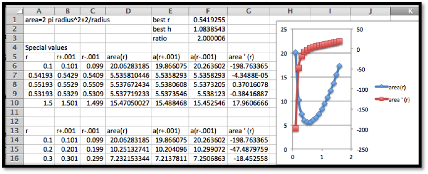
Solving for where the derivative of area is zero, we find the radius of the can should be 0.5419 deciliters. We plug that value back into the formula for height in terms of radius and see that the height should be 1.083854 deciliters. To understand the shape of the can we see that the height is twice the radius, or the same thing as the diameter of the can. The can is optimally shaped when it is the shape of a large paint can.
There are three technical details worth mentioning from the last example. First, in Excel, the best way to put \(\pi\) in a formula is with the constant PI(). Second, the function for area is defined on an open interval where the radius is positive. There is no maximum area for a can of fixed volume. (However inefficient our can is, we can always make it worse, by moving farther from the optimum.) Third, one should also note that for this problem, we wanted several numbers as part of our answer. The worksheet for the problem puts the best height and radius at the top, where the reader can easily find it.
In this last example we had to reduce two equations in two unknowns to a single equation in one unknown to be able to optimize. We may also need to produce an equation from data.
Example3.4.9.Maximized profits and break-even points.
Figure3.4.10.Video presentation of this example
For widget production and sales, we have the following data on profit based on sales.
Quantity
10
100
200
250
300
400
Profit
-$2,083
$31,040
$48,587
$49,845
$46,146
$23,670
Find the break even points and the quantity that maximizes profit.
Solution.
From looking at a quick plot of the data, I am going to assume that the profit function is a downward facing parabola, so I find the best fitting quadratic polynomial for the data. Using trendlines, my profit function is
I now set up the table for special values with goal seek. I use starting points of 20 and 450 for the break even points and 250 for the maximum. To find break even points, I goal seek on the profit function. To find the maximum point, I goal seek on the derivative of the profit function.
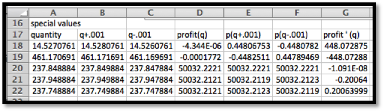
Rounding to the nearest whole number in each case, my break even points are for selling 15 and 460 widgets. My maximum profit of $50,032 occurs when I sell 238 widgets.
Example3.4.11.Minimizing expenses.
Figure3.4.12.Video presentation of this example
We are running a business and want to minimize equipment expenses. For a particular piece of equipment the costs can be broken into initial outlays to buy the equipment, fixed annual expenses to keep the equipment in the inventory, and repair costs which we anticipate rising as the equipment gets older. A widget press costs $10,000 to buy, and the operating expenses are $500 a year, and the total repair costs are \(300t^2\) over the first \(t\) years. What is the optimal length of time to use a widget press before replacing it?
Solution.
My annual cost equation is total cost divided by \(t\text{.}\) This annual cost is:
I create a spreadsheet that calculates the cost and its derivative over the first 10 years.
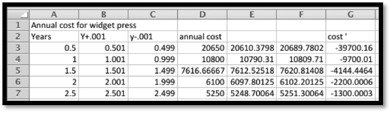
Looking at the data, the minimal annual cost is obtained by keeping the press between 5.5 and 6.0 years. Using Goal seek on the derivative, I find the minimal annual cost of $3,964.10 is obtained by keeping the press for 5.77 years.
Reading QuestionsReading Check
1.Reading check, Optimization.
This question checks your reading comprehension of the material is section 3.4, Optimization, of Business Calculus with Excel. Based on your reading, select all statements that are correct. There may be more than one correct answer. The statements may appear in what seems to be a random order.
When a curve has a point that is a maximum or minimum for the whole domain, we call it an absolute maximum or minimum.
We cannot have an extremum at an interior point of the domain if the derivative is nonzero.
When a curve has a point that is a maximum or minimum in some interval around the point, we call it a relative maximum or minimum.
We can only have extrema at a critical point, a place when the derivative is zero or undefined, or at an endpoint.
At points where the derivative is zero we must have a relative maximum or minimum.
Every function must have an absolute maximum.
The process for optimization is to find all the candidate points, then to see which gives the highest and lowest values.
In a business setting, we are often concerned with finding the maximum and minimum values of a function, because one or the other will be a best, or optimum value.
None of the above
ExercisesExercises: Optimization
Exercise Group.
For the given function and domain:
Plot the function and its derivative on the same graph.
Identify the regions where the function is increasing and the regions where the function is decreasing.
Identify the local maximum and minimum for the given domain.
Identify the global maximum and minimum for the given domain
1.
\(f(x)=-2x^2+17x+23\) on the interval \(0\le x\le 50\text{.}\)
Solution.
Setting up these problems in Excel follows the same process.
We create columns for \(x, x+.001, x-.001, f(x), f(x+.001), f(x-.001)\text{,}\)and \(f'(x)\)
Once you enter \(f(x)\text{,}\) doing a right quick fill easily finds \(f(x+.001)\) and \(f(x-.001)\text{,}\) and then \(f'(x)\) is easy to compute.
Once you graph \(f\) and \(f'\text{,}\) it is usually a good idea to graph the derivative using the secondary axis: double click on the derivative function and choose the appropriate button in the dialogue box.
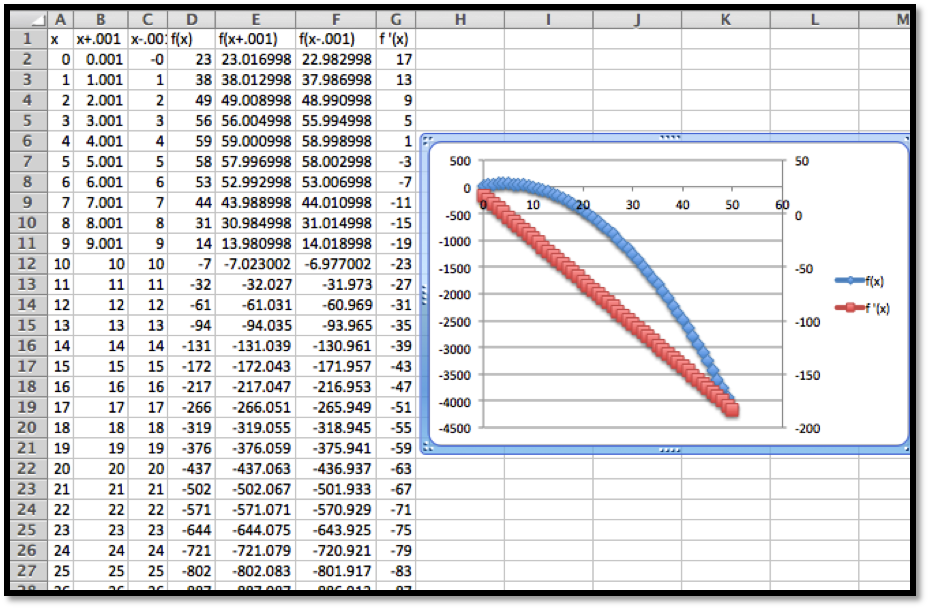
The table is truncated at \(x = 25\text{,}\) but the rest was used to create the graph.
We can do a Goalseek to find the critical point: set \(f'(x)=0\text{.}\)
In this example \(f'(x)=0\) when \(x = 4.25\)
The function \(f\) is increasing for \(0\lt x \lt 4.25\text{.}\)
The function \(f\) is decreasing for \(x\gt 4.25\)
The function has a local max at \(x = 4.25\) and the maximum value is \(59.13\)
The only local minimums are the endpoints, \((0, 23)\) and \((50, -4127)\text{.}\)
To find the global maximum and minimum we check the endpoints and the critical points
\(x\)
\(f(x)\)
status
0
23
4.25
59.13
maximum
50
-4127
minimum
The global minimum value is \(-4127\) at \(x=50.\)
The global maximum value is \(59.13\) at \(x=4.25\)
2.
\(g(x)=-3x^2+18x+25\) on the interval \(10\le x\le 50\text{.}\)
3.
\(h(x)=x^3-9x+12\) on the interval \(0\le x\le 10\text{.}\)
Solution.
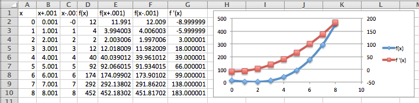
The place where \(f'(x)=0\) is at \(x = 1.73\text{.}\)
The function \(f\) is decreasing for \(0\lt x \lt 1.73\text{.}\)
The function \(f\) is increasing for \(1.73 \lt x\lt 10\text{.}\)
The function has a local minimum at \((1.73, 1.61)\text{.}\)
The function has a local maximums at \((0, 12)\) and \((10, 922)\text{.}\)
To find the global maximum and minimum we check the endpoints and the critical points.
\(x\)
\(f(x)\)
status
0
12
1.73
1.61
minimum
10
922
maximum
The global minimum value is \(1.73\) at \(x=1.61.\)
The global maximum value is \(922\) at \(x=10\)
4.
\(k(x)=x^3-6x^2+12x+5\) on the interval \(0\le x\le 10\text{.}\)
5.
\(m(x)=5x+9\) on the interval \(-10\le x\le 30\text{.}\)
Solution.
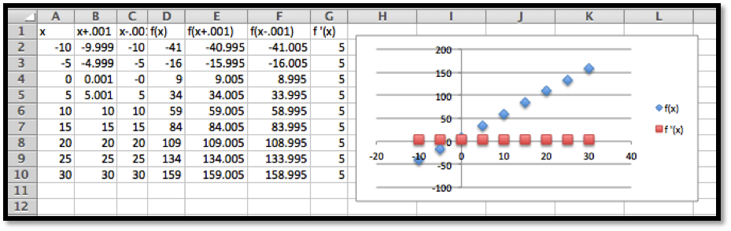
The derivative is never zero
The function \(m(x)\) is always increasing for \(-10 \lt x\lt 30\)
The function has a local minimum at \((-10, -41)\) and a local maximum at \((30, 159)\text{.}\)
The global minimum value is \(-41\) at the left endpoint \(x=-10.\)
The global maximum value is \(159\) at the right endpoint \(x=30\)
6.
\(n(x)=42\) on the interval \(0\le x\le 10\text{.}\)
7.
\(f(x)=(x-3)\exp(-0.02 x)\) on the interval \(0\le x\le 100\text{.}\)
Solution.
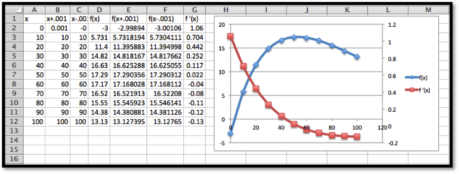
The place where \(f'(x)=0\) is at \(x = 52.95\)
The function \(f\) is increasing for \(0\lt x \lt 52.95\text{.}\)
The function \(f\) is decreasing for \(52.95 \lt x\lt 100\)
The function has a local max at \(x = 52.95\) and the maximum value is \(17.32\)
The function has a local minimum at \((0, -3)\) and \((100, 13.13)\text{.}\)
To find the global maximum and minimum we check the endpoints and the critical points
\(x\)
\(f(x)\)
status
0
-3
minimum
52.95
17.32
maximum
100
13.13
The global minimum value is \(-3\) at \(x=0.\)
The global maximum value is \(17.32\) at \(x=52.95\)
8.
\(g(x)=(x^3-9 x)exp(-0.1 x)\) on the interval\(0\le x\le 100\text{.}\)
9.
\(h(x)=100/x+5 x\) on the interval \(1\le x\le 50\text{.}\)
Solution.
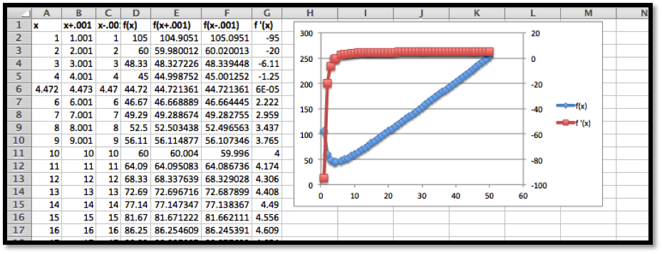
The place where \(f'(x)=0\) is at \(x = 4.47\)
The function \(h\) is decreasing for \(1\lt x \lt 4.47\text{.}\)
The function \(h\) is increasing for \(4.47 \lt x\lt 50\)
The function has a local min at \(x = 4.47\) and the minimum value is \(44.72\)
The function has a local maximums at \((1, 105)\) and \((50, 252)\text{.}\)
To find the global maximum and minimum we check the endpoints and the critical points
\(x\)
\(h(x)\)
status
1
105
4.47
44.73
minimum
50
252
maximum
The global minimum value is \(44.73\) at \(x=4.47.\)
The global maximum value is \(252\) at \(x=50\)
10.
\(k(x)=75/x+3 x^2\) on the interval \(1\le x\le 50\text{.}\)
11.
The demand price for widgets is given by \(\price(q)=300-0.5q\text{.}\) The fixed costs are $7,500 and the variable costs are $10 per widget.
Give a profit function for widgets. Specify the domain on which the function makes sense.
Identify the candidate points for maximizing profit.
Give the quantity that maximizes profit along with the maximum profit.
Solution.
Preliminary work: find the formulas for price (given) and cost (described).
We find profit and the derivative of the profit function to determine where the derivative is 0. Below is the graph of \(\profit, \profit'\) and we did GoalSeek to find the critical point (x=290). We should also consider endpoints, but the vertex is clearly above 0.
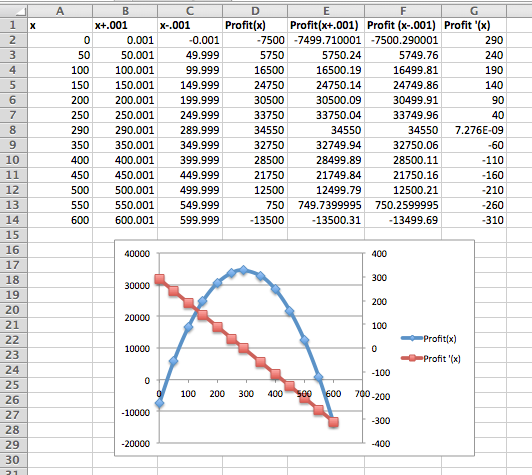
The profit is maximized at 290 and the maximum profit is $34,550
12.
The cost equation for gizmos is \(\cost(q)=1000+3q\) and the demand function is \(\price(q)=500-3q\text{.}\) Find the maximum profit.
13.
The cost equation for gadgets is \(\cost(q)=1000+2q+.0001q^2\) and the demand function is \(\price(q)=100/(1+.01q)\text{.}\) Find the maximum profit.
Assuming that the price should be a positive number does not help us in this problem. We can check, but all we get is that \(q \gt -100\text{,}\) but \(q\) should be positive.
If domain restrictions are not obvious or the algebra is challenging we can resort to trial and error. The small coefficients (.0001 for instance) do suggest we have fairly large values for \(q\text{.}\)
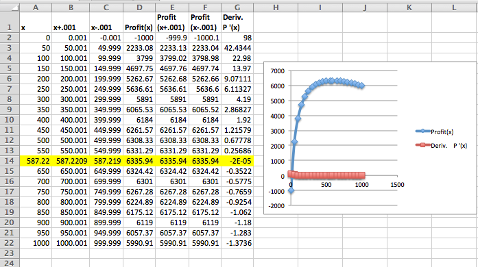
Using \(0\lt q\lt 1000\text{,}\) we see that there is a maximum near \(q = 600\text{.}\) Goal Seek shows that the critical point is at \(q = 588\) gadgets. The maximum profit is $6336.
14.
The cost equation for gizmos is \(\cost(q)=10000+10q\) and the demand function is \(\price(q)=100/\sqrt{1+.01q}\text{.}\) Find the maximum profit.
15.
Suppose the cost function for your operation is \(\cost(q)=10000+10q+20000/(1+.1q)\text{.}\) Find the quantity that minimizes price.
Solution.
The function is interesting in that the minimum cost is not easily see on the graph.
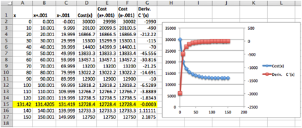
The function is graphed for \(0\le q\le 150\) in steps of 10. The cost function almost looks as though it is leveling out and reaching an asymptote. An inspection of the table shows that this is not true. The derivative goes from negative to positive right around 130. GoalSeek shows that the derivative is zero at approximately 131.42. The recorded Cost is $12,728.40, which is the minimal cost for this function.
16.
Suppose your cost function is \(\cost(q)=10000(0.8)^{.1q}+.1q^2\text{.}\) Find the quantity that minimizes price.
17.
With rental property, a simplified model of costs spreads the purchase cost over the time that the property is held and assume that repair costs will rise the longer the property is held. This gives a formula for annual expenses as
where \(r\) is a positive number that depends on the type of property. Assume for carpet cleaners that the replacement cost is $600, that the repair costs in the first year are $50, and \(r=1\text{.}\) Find the length of time the property should be held to minimize the annual expense.
Note that the function is not defined when \(t = 0\text{.}\) So we will graph the function and the derivative for \(1 \le t \le 10\text{.}\) The property should be held for 3.5 years.
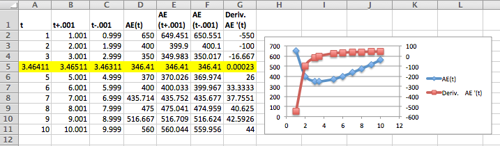
18.
With rental property, a better model factors in the depreciation of the property and how much can be recovered by selling the property used. If we use a 5 year straight line depreciation the formula becomes
Repeat the assumptions from the problem above. Assume for carpet cleaners that the replacement cost is $600, that the repair costs in the first year are $50, and \(r=1\text{.}\) Find the length of time the property should be held to minimize the annual expense.
19.
The annual sales rate for a new toy is found to be \(\Sales(t)=10000 t^2 \exp(-t^2/16)\text{.}\) Find the month that maximizes sales.
Solution.
If we are minimizing according to month, we will graph the function for \(1 \le t \le 12\text{.}\)
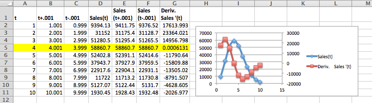
GoalSeek does not improve our estimate, and we see that the maximum sales must occur when \(t = 4\text{.}\) The derivative is (close to) 0 there and this means our sales are maximized in April (assuming 1 represents January).
20.
Consider the following sales data for your business.
Production level
1903
2424
3065
3424
4076
Profit
$828,560.10
$942,625.40
$1,006,167.50
$987,980.40
$929,780.40
Plot the data and find a reasonable best fitting curve for the data.